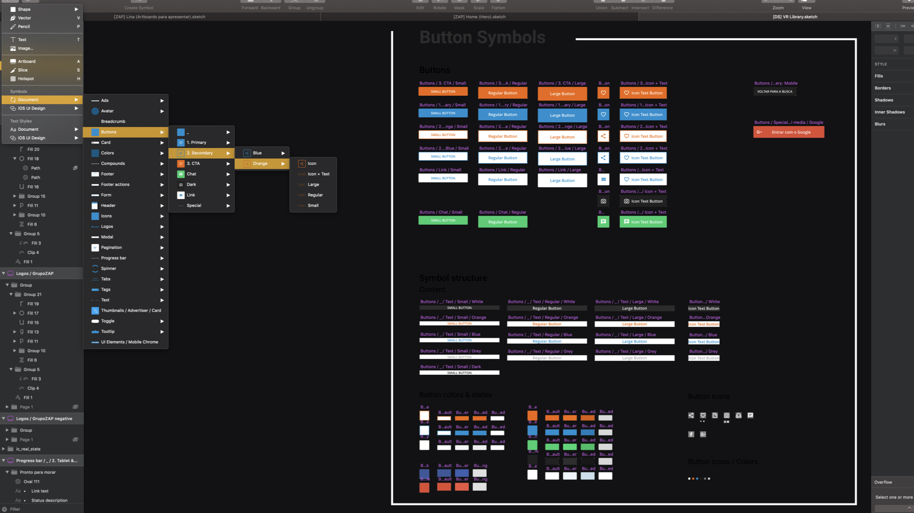
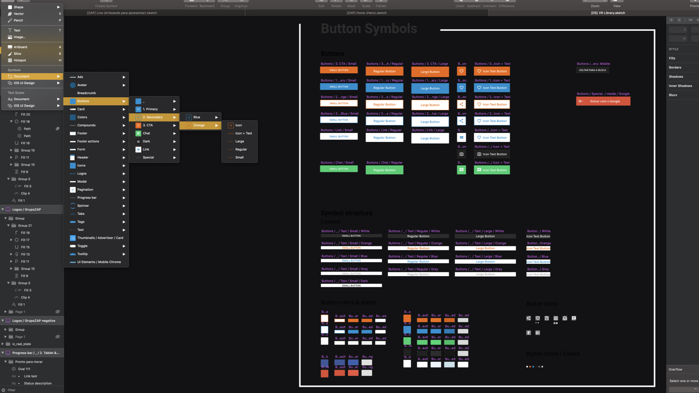

Product Design
Zap Imóveis Redesign
After the merger of VivaReal and Zap Imóveis – the two leading real estate tech companies in South America – the company had to cope with the integration of two distinctive tech teams.
As the engineering teams made the integration of the systems, the design team saw the opportunity to rethink the strategy under one of the portals' design, which had problems in accessibility, duplicate code, and no logic behind the use of
its typography, colors, and components throughout the portal.


 
